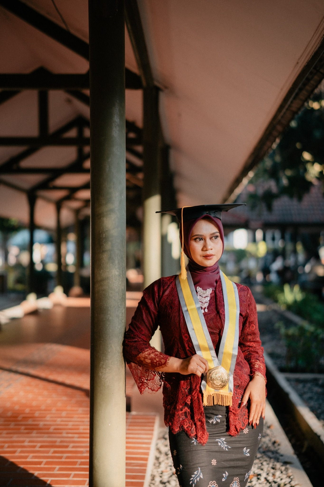
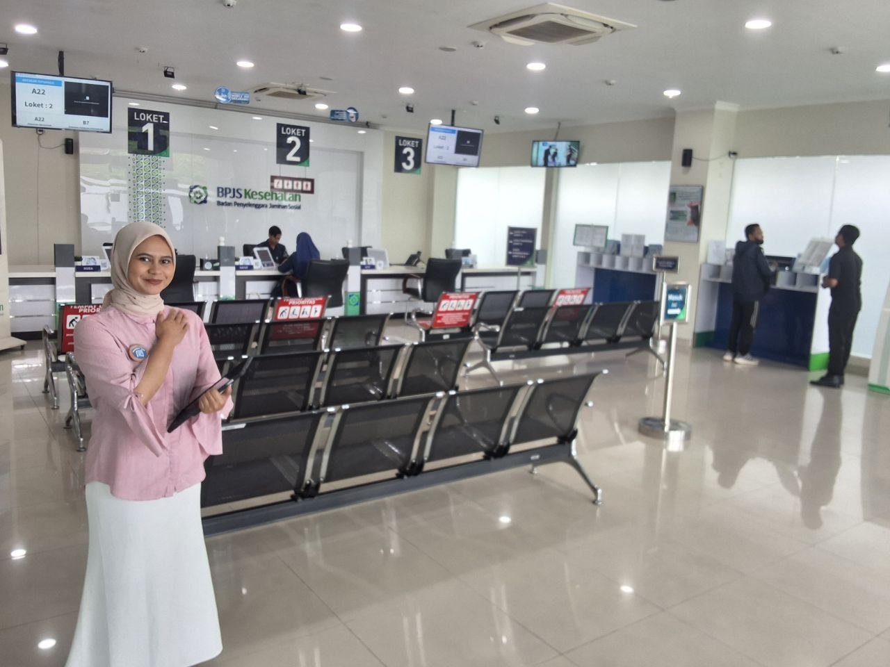
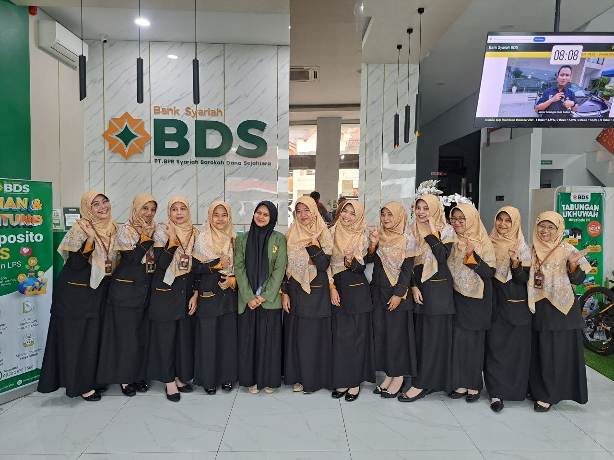

S1 Manajemen
Universitas Pembangunan Nasional “Veteran” Yogyakarta
Agustus 2022 – April 2026
IPK 3,75/4,00
Lulusan S1 Manajemen Universitas Pembangunan Nasional “Veteran” Yogyakarta dengan IPK 3,75/4,00. Memiliki pengalaman di bidang administrasi, pengelolaan dokumen dan keuangan, serta pelayanan pelanggan. Terbiasa mengelola data, menyusun laporan, menangani kebutuhan administrasi, dan memberikan informasi layanan secara komunikatif. Memiliki ketelitian, kemampuan koordinasi, serta penguasaan Microsoft Office dan Google Workspace.

Saya memiliki latar belakang pendidikan manajemen dan pengalaman kerja serta magang yang mencakup administrasi operasional, administrasi keuangan, pengelolaan dokumen, dan layanan peserta. Saya terbiasa bekerja dengan data dan dokumen secara terstruktur, berkoordinasi dengan tim, serta membantu pengguna memperoleh informasi dan menyelesaikan kebutuhan layanan.
Universitas Pembangunan Nasional “Veteran” Yogyakarta
Agustus 2022 – April 2026
IPK 3,75/4,00
Administrasi umum, administrasi keuangan, pengelolaan data dan arsip, customer service, serta dukungan operasional.
Membantu pendaftaran dan kendala penggunaan Mobile JKN, memberikan dukungan administrasi dan informasi terkait berita acara rekonsiliasi peserta, serta menginformasikan kanal layanan online.
Mendukung pemeriksaan kelengkapan dokumen pencairan kredit, komunikasi internal, serta pengelompokan dokumen keuangan.
Mengelola administrasi keuangan harian, invoice bulanan, proses pembayaran, laporan keuangan harian dan bulanan, serta penyusunan rencana keuangan tahunan.
Membantu peserta menggunakan Mobile JKN dan mengakses kanal layanan digital.
Mengelola data peserta didik dan wali, arsip administrasi, pendaftaran peserta didik baru, laporan harian, rapor enam bulanan, serta laporan kepada instansi terkait.
Dokumentasi pengalaman magang dan kegiatan penelitian di lingkungan layanan publik serta perbankan syariah.

Selama menjalani magang sebagai Service Officer, saya membantu peserta dalam memahami penggunaan aplikasi Mobile JKN serta mengakses kanal layanan digital BPJS Kesehatan. Peran ini melatih kemampuan komunikasi, ketelitian dalam memberikan informasi, dan responsivitas dalam membantu kebutuhan peserta di area pelayanan.
Foto ditampilkan sebagai dokumentasi pengalaman magang.

Melaksanakan kegiatan magang dengan mendukung administrasi umum, pemeriksaan kelengkapan dokumen pencairan pembiayaan, komunikasi internal, serta pengelompokan dokumen keuangan. Kegiatan magang ini juga disertai proses penelitian untuk memperdalam pemahaman mengenai lingkungan kerja dan proses administrasi di lembaga perbankan syariah.
Foto merupakan dokumentasi kegiatan bersama tim BPRS BDS.
Contoh simulasi untuk memperlihatkan pendekatan kerja dan keterampilan administrasi. Data pada proyek berikut bersifat fiktif dan bukan dokumen milik instansi.
Simulasi penyusunan database peserta, pengelompokan informasi, dan pembaruan data menggunakan spreadsheet.
Simulasi pencatatan permintaan layanan, kategorisasi kendala, dan penyusunan ringkasan laporan berkala.
Simulasi daftar periksa untuk membantu proses verifikasi dan pemantauan kelengkapan dokumen.
Simulasi alur penerimaan pertanyaan, identifikasi kebutuhan, pemberian informasi, dan tindak lanjut layanan.
Catatan: proyek-proyek ini merupakan studi kasus simulasi yang dibuat untuk portofolio.
Terbuka untuk kesempatan di bidang administrasi, operasional, dan customer service.
Email: manisafanirahmasari@gmail.com
LinkedIn: linkedin.com/in/manisafani